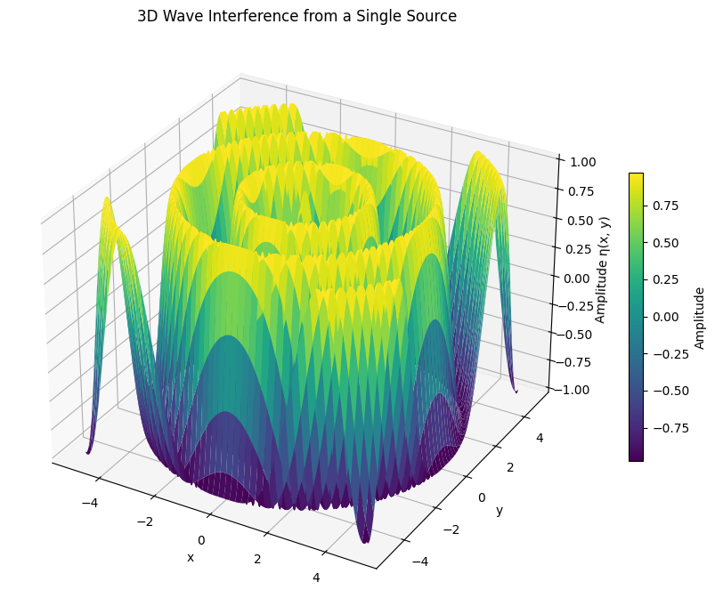
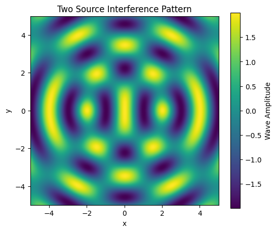
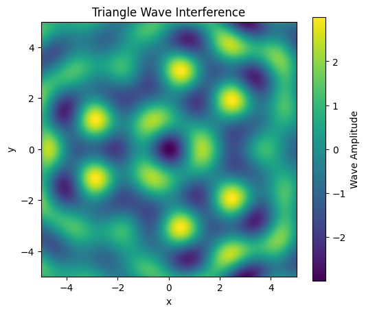
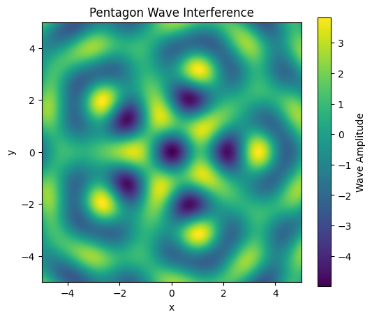

Problem 1
🌊 Wave Interference Simulation with Polygonal Source Arrangements
✅ 1. Project Description
We simulate the 2D wave interference patterns generated by coherent point sources arranged at the vertices of regular polygons. The wave at each point is computed using:
\[
\eta(x, y, t) = \sum_{i=1}^{N} A \cos(k r_i - \omega t)
\]
Where:
- \(A\): Amplitude
- \(k = \frac{2\pi}{\lambda}\): Wavenumber
- \(\omega = 2\pi f\): Angular frequency
- \(r_i\): Distance to the i-th source
✅ 2. Python Code (Jupyter Notebook-Ready)
# --- Imports ---
import numpy as np
import matplotlib.pyplot as plt
from matplotlib.animation import FuncAnimation
from mpl_toolkits.mplot3d import Axes3D # Optional for 3D plotting
# --- Wave Parameters ---
A = 1 # Amplitude
wavelength = 2 # Wavelength (λ)
frequency = 1 # Frequency (Hz)
k = 2 * np.pi / wavelength
omega = 2 * np.pi * frequency
# --- Mesh Grid for Plotting ---
x = np.linspace(-5, 5, 400)
y = np.linspace(-5, 5, 400)
X, Y = np.meshgrid(x, y)
# --- Function to Generate Regular Polygon Vertices ---
def get_polygon_vertices(N, radius=3):
"""
Generate coordinates for a regular polygon with N vertices.
"""
angles = np.linspace(0, 2 * np.pi, N, endpoint=False)
x = radius * np.cos(angles)
y = radius * np.sin(angles)
return np.column_stack((x, y))
# --- Function to Calculate Total Wave Displacement ---
def total_wave(X, Y, t, sources):
"""
Compute the total wave height at each point due to multiple sources.
"""
η = np.zeros_like(X)
for (xi, yi) in sources:
R = np.sqrt((X - xi)**2 + (Y - yi)**2) + 1e-8 # Avoid division by 0
η += A * np.cos(k * R - omega * t)
return η
✅ 3. Plot Examples (1, 2, and 3+ Sources)
A. Single Source
import numpy as np
import matplotlib.pyplot as plt
from mpl_toolkits.mplot3d import Axes3D # For 3D plots
# --- Wave Parameters ---
A = 1 # Amplitude
wavelength = 2 # Wavelength
frequency = 1 # Frequency
k = 2 * np.pi / wavelength
omega = 2 * np.pi * frequency
# --- Grid ---
x = np.linspace(-5, 5, 300)
y = np.linspace(-5, 5, 300)
X, Y = np.meshgrid(x, y)
# --- Source Location ---
x0, y0 = 0, 0 # Single source at origin
# --- Time ---
t = 0 # You can change this to animate over time
# --- Compute Radial Distance and Wave ---
R = np.sqrt((X - x0)**2 + (Y - y0)**2) + 1e-8
Z = A * np.cos(k * R - omega * t)
# --- 3D Plot ---
fig = plt.figure(figsize=(10, 7))
ax = fig.add_subplot(111, projection='3d')
surf = ax.plot_surface(X, Y, Z, cmap='viridis', edgecolor='none')
# --- Plot Formatting ---
ax.set_title("3D Wave Interference from a Single Source")
ax.set_xlabel("x")
ax.set_ylabel("y")
ax.set_zlabel("Amplitude η(x, y)")
fig.colorbar(surf, ax=ax, shrink=0.5, label="Amplitude")
plt.tight_layout()
plt.show()

B. Two Sources
sources_2 = [[-2, 0], [2, 0]]
η2 = total_wave(X, Y, t=0, sources=sources_2)
plt.figure(figsize=(6,5))
plt.imshow(η2, extent=[-5,5,-5,5], cmap='viridis')
plt.title("Two Source Interference Pattern")
plt.colorbar(label='Wave Amplitude')
plt.xlabel('x'); plt.ylabel('y')
plt.show()

C. Triangle (3 Sources)
sources_3 = get_polygon_vertices(3)
η3 = total_wave(X, Y, t=0, sources=sources_3)
plt.figure(figsize=(6,5))
plt.imshow(η3, extent=[-5,5,-5,5], cmap='viridis')
plt.title("Triangle Wave Interference")
plt.colorbar(label='Wave Amplitude')
plt.xlabel('x'); plt.ylabel('y')
plt.show()

D. Pentagon (5 Sources)
sources_5 = get_polygon_vertices(5)
η5 = total_wave(X, Y, t=0, sources=sources_5)
plt.figure(figsize=(6,5))
plt.imshow(η5, extent=[-5,5,-5,5], cmap='viridis')
plt.title("Pentagon Wave Interference")
plt.colorbar(label='Wave Amplitude')
plt.xlabel('x'); plt.ylabel('y')
plt.show()

✅ 4. Animated Interference Pattern (GIF or Inline Animation)
Animate 3 Sources (Triangle)
fig, ax = plt.subplots(figsize=(6,5))
sources_anim = get_polygon_vertices(3)
im = ax.imshow(total_wave(X, Y, 0, sources_anim), extent=[-5,5,-5,5], cmap='plasma', animated=True)
def update(frame):
η = total_wave(X, Y, t=frame * 0.05, sources=sources_anim)
im.set_array(η)
return [im]
ani = FuncAnimation(fig, update, frames=100, blit=True)
plt.title("Animated Wave Interference (Triangle)")
plt.show()
# To save as a GIF (uncomment below line)
# ani.save("wave_triangle.gif", writer="pillow")
✅ 5. Interpretation of Results
| Setup | Interference Pattern Description |
|---|---|
| Single Source | Uniform circular ripples |
| Two Sources | Alternating constructive/destructive interference lines |
| Triangle | Symmetric pattern with 3-fold radial symmetry |
| Pentagon | Flower-like complex interference |
- Constructive Interference: Peaks align (bright zones)
- Destructive Interference: Troughs cancel peaks (dark zones)
✅ 6. Next Steps / Extensions
You can extend this simulation by:
- Making waves out of different amplitudes or phases
- Adding non-coherent (random phase) sources
- Visualizing in 3D using
plot_surface - Implementing non-uniform wave speeds
- Animating the system in real time for physical realism